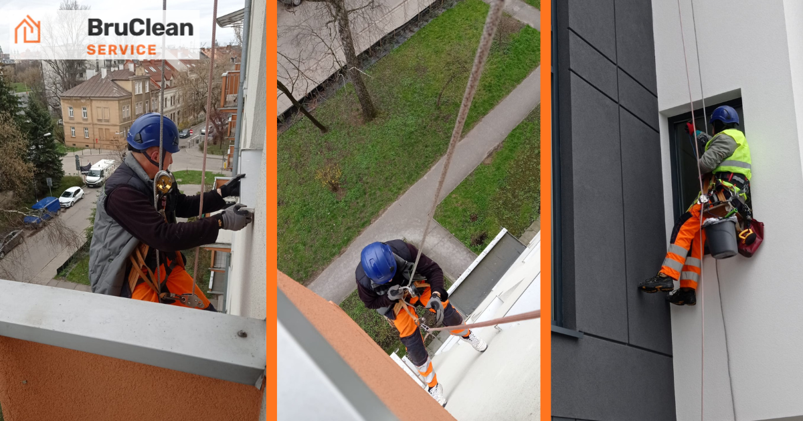

Usługi wysokościowe Kraków — pełny zakres prac alpinizmu przemysłowego
Opublikowano: 2 września 2026 · BruClean Service Kraków

Usługi wysokościowe to znacznie więcej niż samo mycie elewacji czy dachu. W dostępie linowym da się wykonać naprawy, montaż instalacji, odśnieżanie i przeglądy techniczne, wszędzie tam, gdzie rusztowanie byłoby zbyt kosztowne, zbyt wolne albo w ogóle niemożliwe do postawienia. W Krakowie ta metoda sprawdza się szczególnie w ścisłej zabudowie, na wysokich budynkach i tam, gdzie liczy się czas reakcji.
Poniżej znajdziesz pełny przegląd tego, co realnie obejmują usługi wysokościowe, żeby wiedzieć, o co pytać przy wycenie i czego się spodziewać na etapie realizacji.
Mycie i czyszczenie na wysokości
To najczęściej zlecana część usług wysokościowych: mycie elewacji, dachów, okien i witryn na wysokości niedostępnej z ziemi czy z drabiny. Zespół w uprzężach dociera w każde miejsce budynku, dobierając ciśnienie i chemię do rodzaju powierzchni, od tynku i klinkieru po blachodachówkę i szkło. W ramach tej samej wizyty zwykle domyka się też czyszczenie rynien, żeby efekt nie zniknął po pierwszym deszczu. Pełny opis tej części usługi znajdziesz na stronach mycie elewacji, mycie dachów i czyszczenie rynien.
Naprawy i konserwacja dekarsko-elewacyjna
Dostęp linowy pozwala też na drobne naprawy bez stawiania konstrukcji dookoła budynku: uszczelnianie obróbek blacharskich, wymianę pojedynczych dachówek, domocowanie luźnych elementów fasady czy punktowe malowanie tam, gdzie farba zaczęła się łuszczyć. To rozwiązanie dla usterek, które trzeba usunąć szybko, zanim zamienią się w kosztowną naprawę, a stawianie rusztowania dla jednego miejsca byłoby nieopłacalne.
Montaż i instalacje na wysokości
Trzeci obszar to montaż i konserwacja elementów zamocowanych wysoko na budynku: oświetlenia elewacyjnego, szyldów i reklam, anten, a także siatek zabezpieczających przed ptactwem lub przed osuwaniem się śniegu z dachu. Prace tego typu wymagają precyzyjnego dostępu do pojedynczego punktu na fasadzie, dokładnie tego, w czym dostęp linowy jest szybszy i tańszy niż jakakolwiek konstrukcja.
Odśnieżanie dachów zimą
To usługa sezonowa, ale w Krakowie po większych opadach staje się jedną z pilniejszych. Nadmiar śniegu na dachu, zwłaszcza przy złożonej geometrii z koszami i załamaniami, obciąża konstrukcję i sprzyja tworzeniu się sopli oraz zastoin wody po odwilży. Zespół pracujący na linach usuwa śnieg pasami, bez ryzyka uszkodzenia pokrycia, jakie niesie odgarnianie z drabiny czy z dachu sąsiedniego budynku. Zakres i termin takiej interwencji ustala się zawsze indywidualnie, w zależności od bieżącej sytuacji pogodowej.
Przeglądy i ocena stanu technicznego
Dostęp linowy to też szybki sposób na obejrzenie dachu lub elewacji z bliska, bez konieczności montażu rusztowania tylko po to, żeby coś sprawdzić. Taki przegląd z dokumentacją fotograficzną przydaje się przed zakupem nieruchomości, przed planowanym remontem albo po silnej wichurze czy burzy gradowej, gdy trzeba szybko ocenić, czy pokrycie nie zostało uszkodzone.
Bezpieczeństwo, uprawnienia i kiedy jednak wybrać rusztowanie
Każda z powyższych prac odbywa się na dwóch niezależnych linach, roboczej i asekuracyjnej, w uprzężach i z pełnym zabezpieczeniem BHP. Zespół ma uprawnienia do pracy na wysokości i ubezpieczenie OC działalności, o co warto zapytać przed podpisaniem zlecenia niezależnie od wybranej firmy.
Dostęp linowy nie zawsze jest najlepszym wyborem. Przy rozległych, długoterminowych remontach, gdzie ekipa potrzebuje stałej platformy na wiele godzin lub dni pracy, albo przy bardzo zwietrzałym, kruchym pokryciu, rusztowanie bywa praktyczniejsze i bezpieczniejsze. Pełne porównanie obu metod, wraz z konkretnymi sytuacjami, w których warto wybrać jedną lub drugą, znajdziesz w artykule prace wysokościowe bez rusztowań — kiedy się to opłaca.
Najczęstsze pytania
Jakie prace poza myciem wchodzą w zakres usług wysokościowych?
Poza myciem elewacji, dachów i okien zespół wykonuje drobne naprawy dekarsko-elewacyjne, uszczelnianie obróbek blacharskich, montaż i konserwację instalacji na wysokości (oświetlenie, szyldy, anteny, siatki zabezpieczające) oraz przeglądy i dokumentację fotograficzną stanu technicznego budynku.
Czy BruClean Service odśnieża dachy zimą?
Tak, odśnieżanie dachów to sezonowa usługa realizowana w dostępie linowym, szczególnie ważna przy dużych opadach i dachach o skomplikowanej geometrii, gdzie nadmiar śniegu obciąża konstrukcję. Zakres i termin ustalane są indywidualnie w zależności od warunków pogodowych.
Ile trwa standardowa wizyta w ramach usług wysokościowych?
Zależy od zakresu. Mycie lub drobna naprawa punktowa to zwykle kilka godzin w ramach jednego dnia, przegląd techniczny z dokumentacją fotograficzną to 1-2 godziny, a bardziej złożone prace montażowe lub odśnieżanie dużego dachu mogą wymagać całego dnia roboczego.
Czy zespół ma ubezpieczenie i uprawnienia do pracy na wysokości?
Tak, prace prowadzi zespół z uprawnieniami do pracy na wysokości i aktualnym ubezpieczeniem OC działalności. Warto zawsze poprosić o potwierdzenie obu tych elementów przed podpisaniem zlecenia, niezależnie od tego, którą firmę wybierzesz.
Masz zadanie na wysokości, które nie pasuje do żadnej gotowej kategorii? Opisz je, a powiemy, czy da się je zrobić w dostępie linowym.
Zapytaj o darmową wycenę